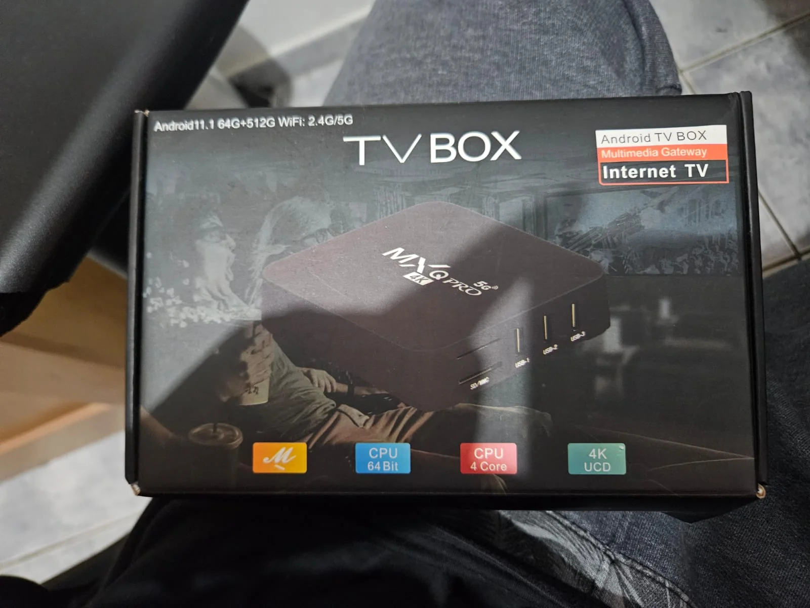
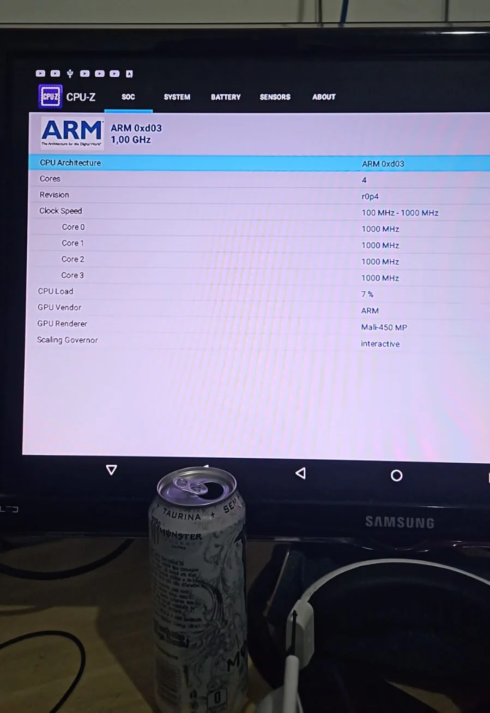
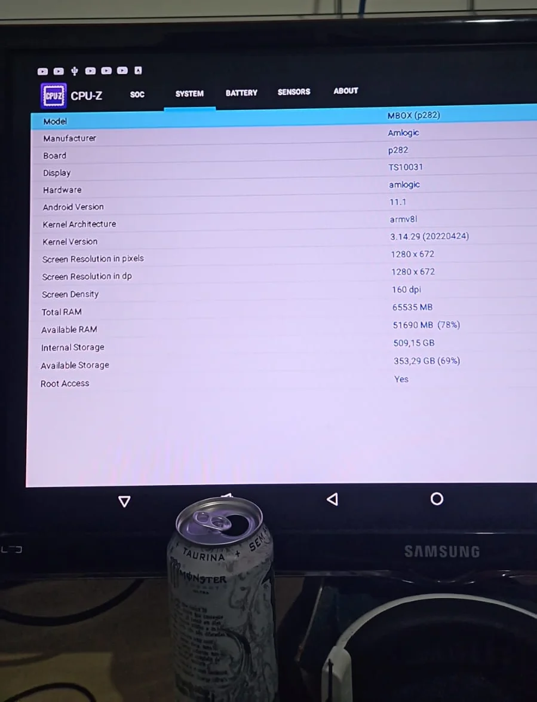
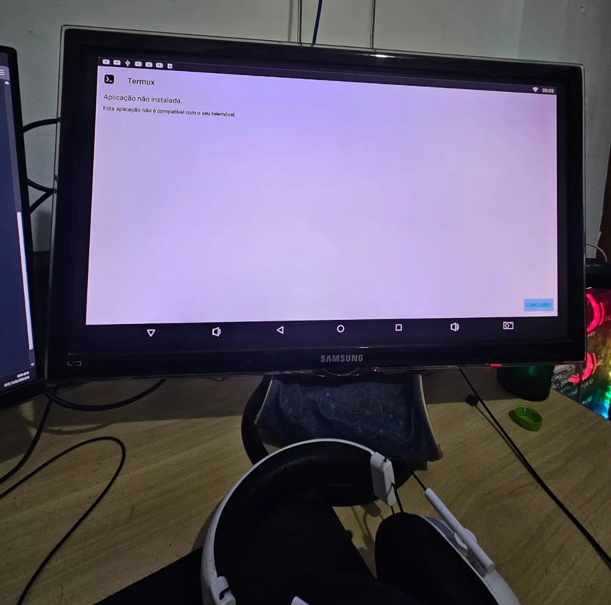
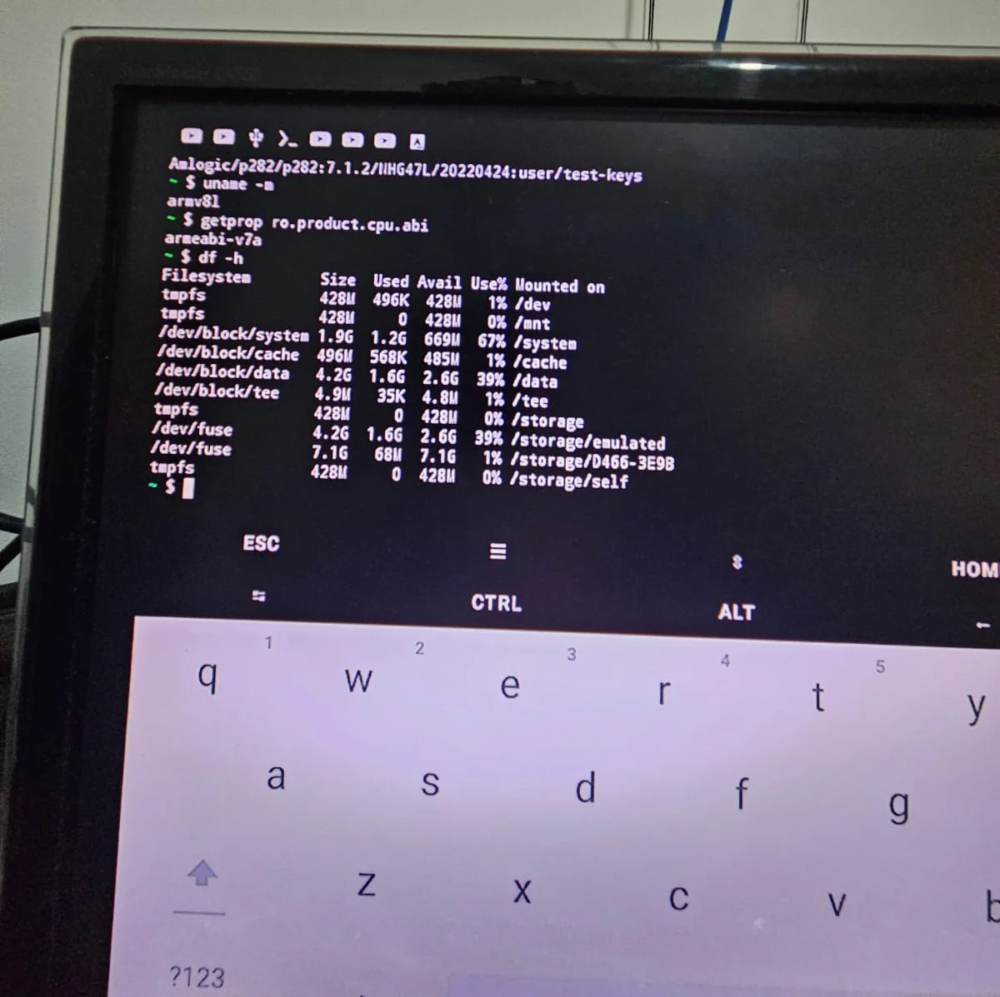
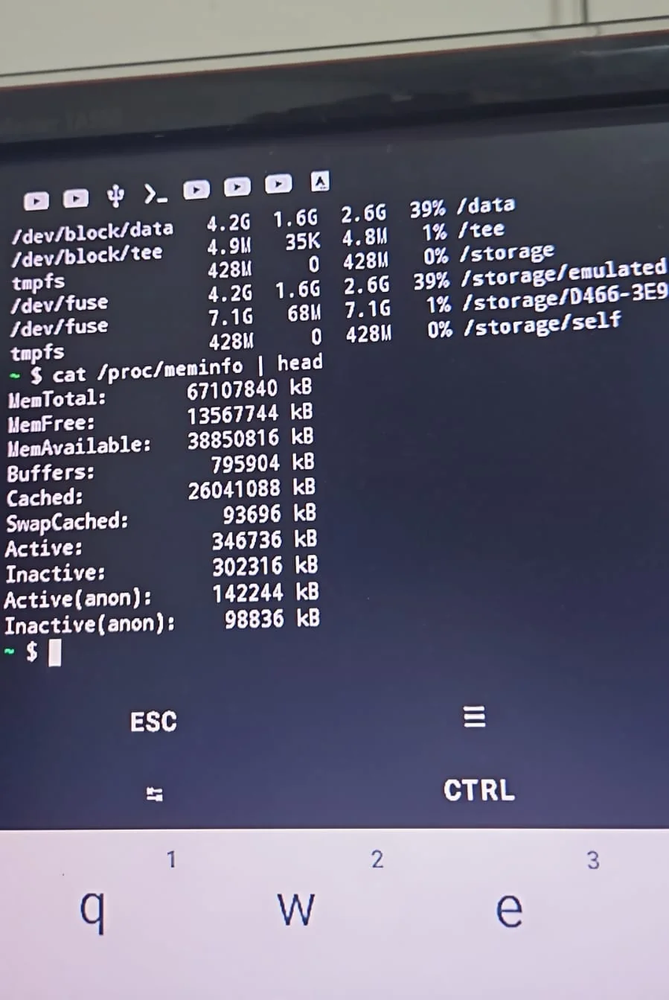
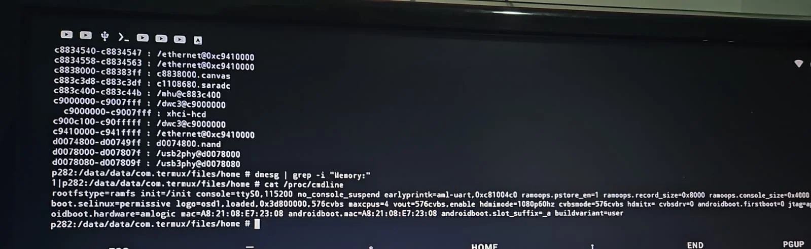
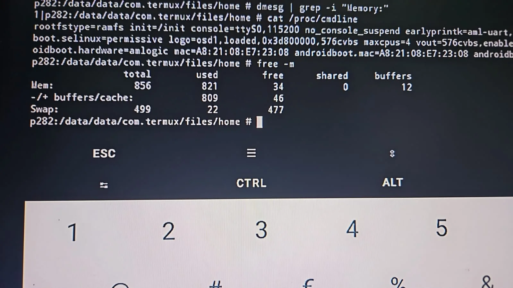

tinha visto uns videos sobre um tal ''pocket lab'' ou ''pocket server'' que você conseguia a partir de uma TV Box (aquelas box pra TV q vem tudo pirata, vc sabe doq eu to falando)
por sorte achei uma dessas na minha casa, mas quando fui
investigar..
negocio tava tudo falsificado KKKKKKKKK
sim eu sei que é 0 surpresas uma TV Box estar falsificada, mas po,
falsificaram até o Android
já de ver que o visual do Android
era o mais idoso POSSIVEL eu já desanimei, pq já sabia q não ia
mais dar pra fazer o tal ''pocket lab'', porém decidi ir mais a
fundo e ir vendo oq consigo fazer nessa TV Box mixuruca
Investigando os reais componentes e versões da TV Box
depois de ver a porqueira de Android que a TV Box tinha, obviamente quis ir ver se o que tinha na caixa era tudo real mesmo.

(certeza que essa porra foi comprada no 25 de maio..... chineses do cacete)
baixei o CPUZ por um pendrive no PC e espetei pra ver o que eu achava e..

NADA KKKKKKKK NÃO ACHEI NADA
oou era isso que eles pensavam que eu iria achar né, pq ninguém é tão burro de ver esse Android de bosta e achar q qualquer coisa melhor q uma batata caiba nesse sistema ai

aqui eu também já duvido que realmente tenha 500GB de Armazenamento, pq a ROM adultera tudo aparentemente, insano..
bom, acabei de baixar o termux no pendrive aq, vou dar uma fuçada e qualquer coisa volto pra documentar :p
(enquanto eu tava no processo de tirar o pendrive do PC e plugar na Box, a porta USB traseira da Box simplesmente parou de funcionar, brutal)
O ANDROID NÃO É NEM 11, NEM 7 NEM 5 KKKKKKKKKKK

basicamente agora a unica coisa q me restou pensar pra fazer é baixar os de 32bit ARMv8l por causa desse carinha aqui
Kernel Architecture: armv8l
já que a ROM mente tanto, nem sei se devo acreditar nem que a Box
existe por si só
mas ja q a gente ta considerando q a ROM é
bem mentirosinha, vamo parar de testar 64bits e ver nos 32.
acabei de baixar o Termux na versão 32 bits e foi
minha teoria
é que:
a CPU provavelmente seja 64bits, já o Android seja
32bits de fato
e a unica arquitetura que eu descobri até agora
que é aceita é a armeabi-v7a
agora que já tenho o Termux instalado (finalmente), chegou a hora
de descobrir o que realmente tem aqui.
por sorte a TV Box veio
com acesso ao root, ou seja é menos trabalho e dor de cabeça :p
Tudo o que eu rodei e descobri:
vamos ver qual versão do Android a ROM jura que é com
getprop ro.build.version.release
11.1
sem surpresas, se vc leu até aqui de fato já sabia disso
agora vamos ver a real versão do Android com
getprop ro.build.version.sdk
25
tive que dar mais uma pesquisadinha e aparentemente
19 = Android 4.4
21 = Android 5.0
22 = Android 5.1
23 = Android 6.0
24/25 = Android 7
26/27 = Android 8
28 = Android 9
29 = Android 10
30 = Android 11na caixinha dizia 11.1 kkkkkk, brutal
agora, vamos dar uma olhada em qual ROM ou Build foi usada pra essa
porcaria comgetprop ro.build.fingerprint
Amlogic/p282/p282:7.1.2/NHG47L/20220424:user/test-keys
buildzona generica
bora ver a arquitetura do kerneluname -m
armv81
agora quais tipos de apps o sistema aceita
getpropr ro.product.cpu.abi
armeabi-v7a
sem surpresas, só consegui baixar o Termux usando a versão pra Android 7 armeabiv7a, ent meio q a gente ja sabia disso
então
cenario mais provavel:
CPU fisico: acho q ARMv8/64-bit
android instalado: 32bit
ABI principal dos app: armeabi-v7a
android real: 7.1.2
API: 25
board: p282
soc/familia: Amlogicvendo o armazenamento
usando df -h pra ver as partições e o tamanho de cada
uma, a gente acha isso:

po, eu sei q essa ROM mentiu sobre tudo basicamente, mas eu ainda
tinha uma pequena esperança de ser pelo menos 20 giga ou 50, mas
nem isso é, é 12
(8 livre mas 4 com o android de bosta)
agora vamo ver a RAM

:( to muito triste que ela não tem 64GB de RAM
vamo ver quanto essa danada tem de verdade

maxcpus=4
pelo menos UMA coisa bateu com o CPUZ né??

1 DE RAM? 1 DE RAM ARREDONDANDO AINDA?
500MB DE SWAP?
desisto de fuçar nessa porra :p
desisto de fuçar nessa porra :p
resultado
sim, da pra usar de servidor, mas um bem fraquinho, bem fraquinho,
MUITO FRACO MESMO
acho que vai dar pra rodar um servicinho aqui
ou acola, mas duvido muito que eu vá realmente utilizar isso
esse foi só o primeiro relatorio do meu experimento com esse lab! ainda tenho um HD q pretendo instalar nele e assim FINALMENTE (talvez) fazer o pocket server pra mim